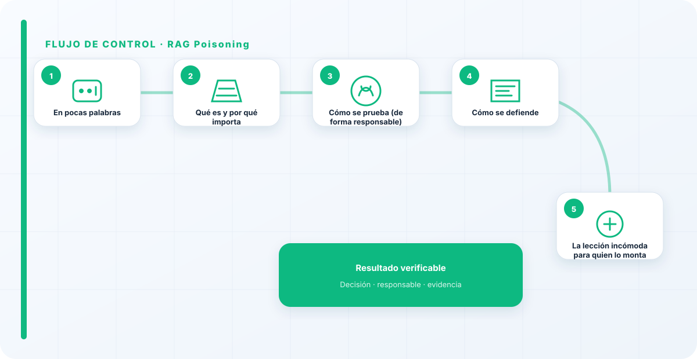
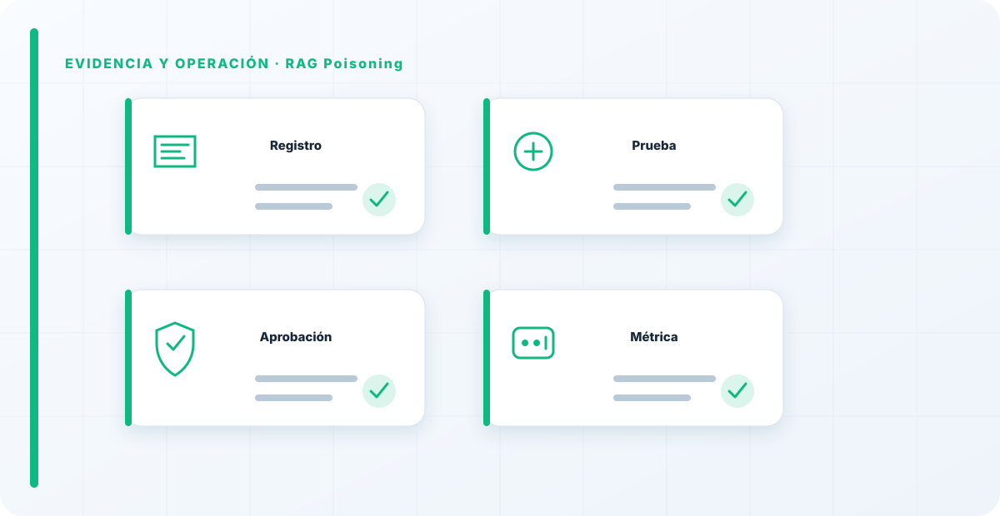

En pocas palabras
El RAG poisoning es atacar un sistema RAG por su punto ciego: el contenido que recupera. Si un atacante consigue colar un documento manipulado en tu índice —o en una fuente que tu RAG consulta—, ese documento puede inyectar instrucciones o sesgar respuestas. El red teaming aquí prueba si tu canalización de datos deja entrar veneno sin darse cuenta.
Qué es y por qué importa
Importa porque la gente protege el modelo y da por seguro el índice, y es justo al revés: el índice es una superficie de entrada. Un RAG envenenado no falla de forma visible; empieza a dar respuestas manipuladas que parecen perfectamente legítimas porque "vienen de tus documentos".
Es un ataque silencioso, y por eso especialmente peligroso: puede estar operando mucho tiempo antes de que alguien sospeche.
Cómo se prueba (de forma responsable)
El red team evalúa, sobre el sistema propio, cómo entra contenido al índice y qué controles hay: ¿se valida el origen?, ¿cualquiera puede aportar documentos que acaben indexados?, ¿se trata lo recuperado como confiable? Se comprueba si un contenido controlado por un tercero puede llegar a influir en las respuestas, y se mide el alcance.
La atención se centra en la cadena de ingestión, no solo en el modelo, porque es ahí donde está la puerta.

Cómo se defiende
La defensa está en el gobierno del dato: controlar y validar qué entra al índice, aplicar permisos a la recuperación, y tratar todo lo recuperado como entrada no confiable frente al modelo.
Un RAG con ingestión controlada y contexto tratado con desconfianza es mucho más difícil de envenenar, porque le has cerrado la puerta por la que entra el veneno.
La lección incómoda para quien lo monta
Cuando hago red teaming de un RAG, casi nunca ataco el modelo: ataco la puerta por la que entran los documentos, porque suele estar abierta de par en par. La lección para quien lo monta es simple pero incómoda: tu RAG es tan seguro como tu proceso de ingestión de datos. Si cualquiera puede meter contenido en el índice, ya está envenenado; solo falta que alguien lo aproveche. La seguridad del RAG no se juega en el modelo, se juega en qué dejas entrar.
Cuando alguien me presume de su RAG y no sabe decirme quién puede meter documentos en el índice, ya sé por dónde lo voy a romper. El veneno entra por la puerta que nadie vigila, no por el modelo.
Los errores que veo una y otra vez
- Proteger el modelo y confiar en el índice.
- No validar el origen de lo que se indexa.
- Tratar el contexto recuperado como seguro.
- No aplicar permisos a la recuperación.
- Ignorar las fuentes externas que el RAG consulta.
Cómo lo llevaría a un entorno real
Cuando aterrizo rag poisoning en una organización, no empiezo por comprar una herramienta ni por redactar veinte páginas. Empiezo por dibujar qué ocurre hoy: quién solicita el cambio, quién lo aprueba, qué sistemas intervienen, qué datos cruzan el proceso y quién se entera cuando algo falla. Ese dibujo suele descubrir más problemas que cualquier checklist. En AI Red Teaming, lo peligroso no es solo carecer de controles; también lo es creer que existen porque alguien los escribió una vez.
Después separo lo imprescindible de lo deseable. Lo imprescindible debe poder comprobarse: un responsable identificado, una regla clara, una evidencia fechada y un mecanismo para reaccionar. En este caso revisaría especialmente fuentes documentales, índice vectorial y retrieval. No me vale una respuesta del tipo «lo gestiona el proveedor» o «eso lo mira seguridad». Necesito saber qué persona toma la decisión, con qué información y dentro de qué plazo.
La implantación debe crecer con el riesgo. Un piloto interno puede funcionar con una ficha breve y una revisión manual. Un sistema que afecta a clientes, empleados, dinero o información sensible necesita segregación de funciones, pruebas independientes, monitorización y un expediente mantenido. Mi criterio es sencillo: cuanto más difícil sea deshacer el daño, más fuerte debe ser la barrera antes de producción.
Decisiones que deben quedar por escrito
Hay decisiones que no deberían vivir en una reunión ni en un mensaje de chat. Para rag poisoning dejaría documentados el alcance, los supuestos, los límites de uso, las excepciones aceptadas y las condiciones que obligan a detener o reevaluar. El documento no tiene que ser enorme, pero sí debe permitir que otra persona entienda por qué se hizo lo que se hizo.
También registraría quién puede cambiar contexto, quién valida permisos y quién recibe las alertas relacionadas con poisoning. Cuando esas tres responsabilidades se mezclan, aparece el clásico problema: el mismo equipo construye, aprueba y declara que todo funciona. No siempre se puede separar por completo, sobre todo en organizaciones pequeñas, pero al menos debe existir una revisión por alguien que no dependa del éxito inmediato del despliegue.
Las excepciones merecen un tratamiento propio. Una excepción sin fecha de caducidad acaba convirtiéndose en la arquitectura real. Por eso exigiría motivo, riesgo aceptado, responsable, compensaciones, fecha de revisión y criterio de cierre. Si falta uno de esos elementos, no es una excepción gestionada; es una deuda invisible.

Un ejemplo práctico
Imaginemos que un equipo quiere incorporar rag poisoning a un servicio que ya está en producción. La propuesta promete reducir tiempos y automatizar tareas, pero utiliza componentes que cambian con frecuencia. Antes de aprobarlo, pediría una prueba limitada, un inventario de dependencias, un flujo de datos y una definición clara de qué acciones quedan fuera del alcance.
Durante la prueba recogería resultados normales y casos límite. No solo miraría si funciona; comprobaría qué ocurre cuando faltan datos, cambia una versión, se pierde conectividad, llega una entrada manipulada o un usuario intenta superar sus permisos. Ahí es donde se ve si el diseño aguanta. En muchas pruebas felices todo parece seguro porque nadie ha intentado romper la hipótesis de partida.
Si los resultados son aceptables, la salida a producción tendría condiciones: versión fijada, configuración aprobada, logs disponibles, responsables de guardia, procedimiento de rollback y revisión tras las primeras semanas. Si alguno de esos elementos no existe, prefiero retrasar el despliegue. Un día de demora suele ser más barato que investigar después un comportamiento que nadie puede reconstruir.
Qué evidencias guardaría
Para demostrar que el control funciona conservaría evidencias que cuenten una historia completa, no capturas sueltas. La historia debe enlazar necesidad, decisión, implementación, prueba y operación. En rag poisoning eso incluye como mínimo la ficha del activo, el diagrama vigente, la configuración aprobada, el resultado de las pruebas y el registro de cambios.
No guardaría información por acumular. Si los logs contienen prompts, documentos, datos personales o secretos, aplicaría minimización, control de acceso y retención. La evidencia debe ayudar a investigar y auditar sin crear una segunda fuga de información. Es frecuente endurecer el sistema principal y dejar un repositorio de evidencias abierto a demasiadas personas.
- Propietario y finalidad de rag poisoning, con fecha de revisión.
- Inventario de fuentes documentales, índice vectorial y dependencias asociadas.
- Criterios de aceptación y resultados sobre retrieval y contexto.
- Configuración efectiva, versión y aprobación del cambio.
- Alertas, incidentes, excepciones y acciones correctivas cerradas.
Señales de que el control no está funcionando
El primer síntoma es que nadie sabe responder con rapidez quién es el responsable. El segundo es que la documentación describe una versión distinta de la que está operando. El tercero es que las alertas existen, pero llegan a un buzón que nadie revisa. Cuando aparecen esos tres síntomas, el problema no es tecnológico: el control se ha desconectado de la operación.
También desconfío de las métricas demasiado perfectas. Cero incidentes, cero excepciones y cien por cien de cumplimiento pueden significar excelencia, pero con frecuencia significan que no estamos mirando. Prefiero indicadores que enseñen tendencia: tiempo de corrección, antigüedad de excepciones, cobertura de pruebas, cambios sin revisión y reincidencias.
Por último, revisaría el comportamiento después de cada cambio significativo. En IA, una actualización de modelo, dataset, prompt, herramienta, permiso o proveedor puede alterar el riesgo sin cambiar el nombre del servicio. Si el proceso solo reevalúa cuando se crea un proyecto nuevo, se quedará ciego durante la mayor parte de la vida útil.
Mi criterio de cierre
Considero que rag poisoning está razonablemente controlado cuando el equipo puede explicar el proceso sin depender de una sola persona, reconstruir una decisión con evidencias y detener el servicio sin improvisar. No busco perfección documental; busco que la organización pueda tomar decisiones repetibles bajo presión.
El cierre no consiste en marcar todas las casillas. Consiste en demostrar que los riesgos relevantes tienen propietario, que los controles se prueban y que las desviaciones producen una acción. Si la evidencia no cambia ninguna decisión, probablemente estamos generando burocracia. Si una decisión importante no deja evidencia, estamos creando fragilidad.
Este enfoque es el que intento mantener en toda CyberLibrary AI: explicar el control de forma que lo entienda negocio, pero con suficiente profundidad para que arquitectura, seguridad, auditoría y operaciones puedan aplicarlo de verdad.
Referencias y marcos relacionados
Contenido educativo y defensivo. Las pruebas de seguridad solo deben hacerse sobre sistemas propios o con autorización expresa.